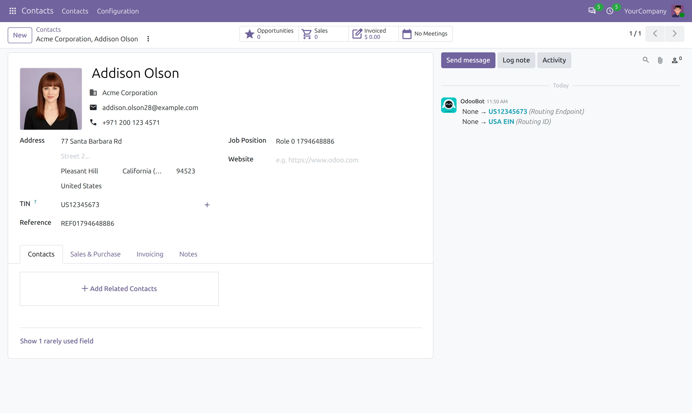
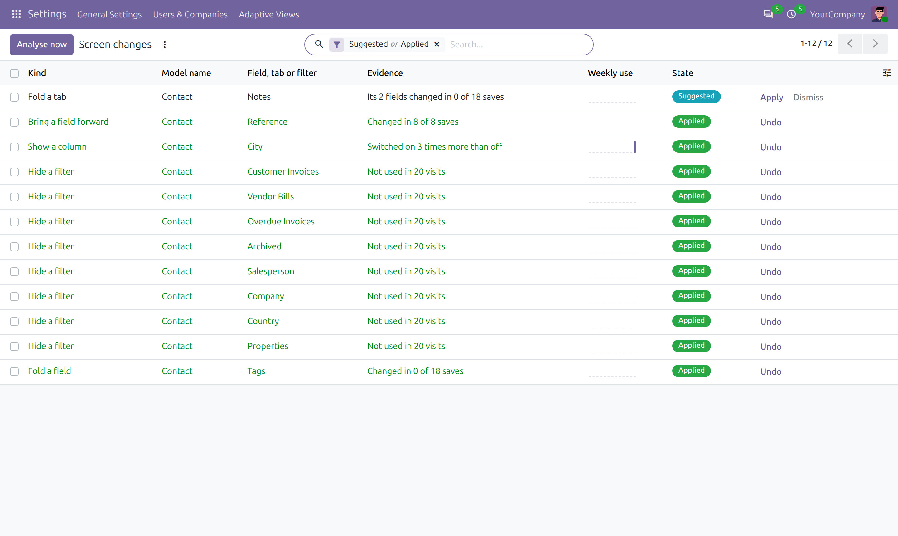
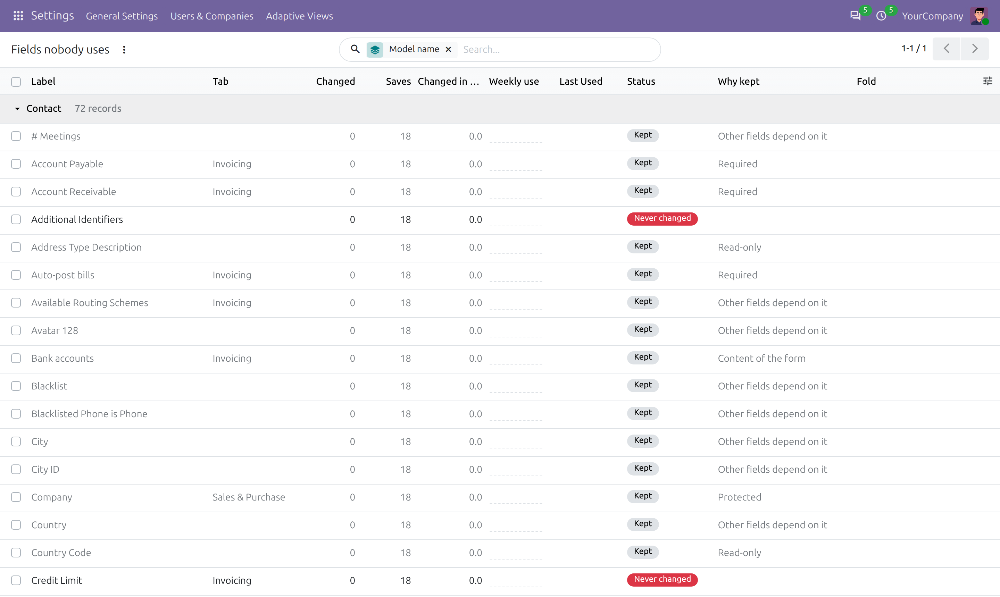
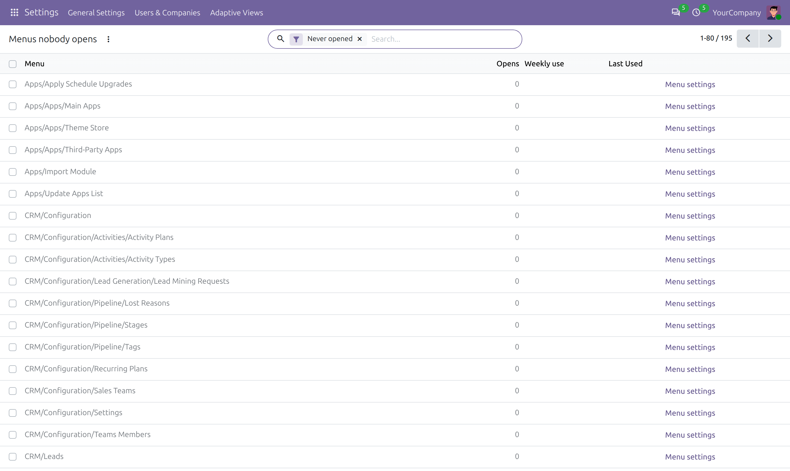
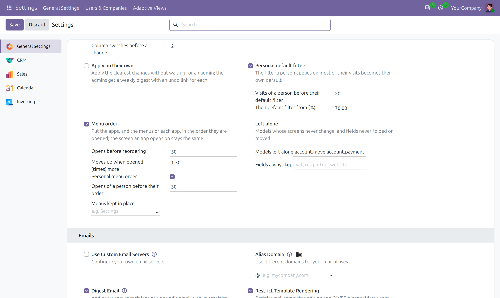
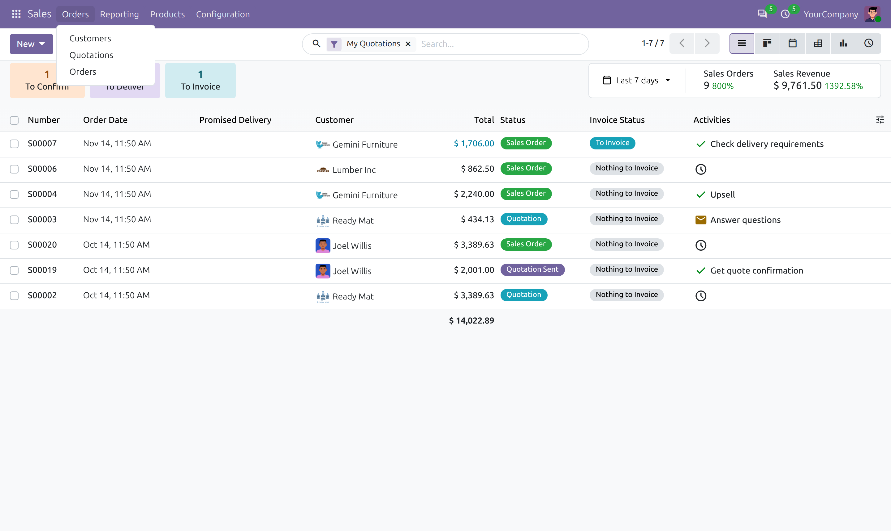
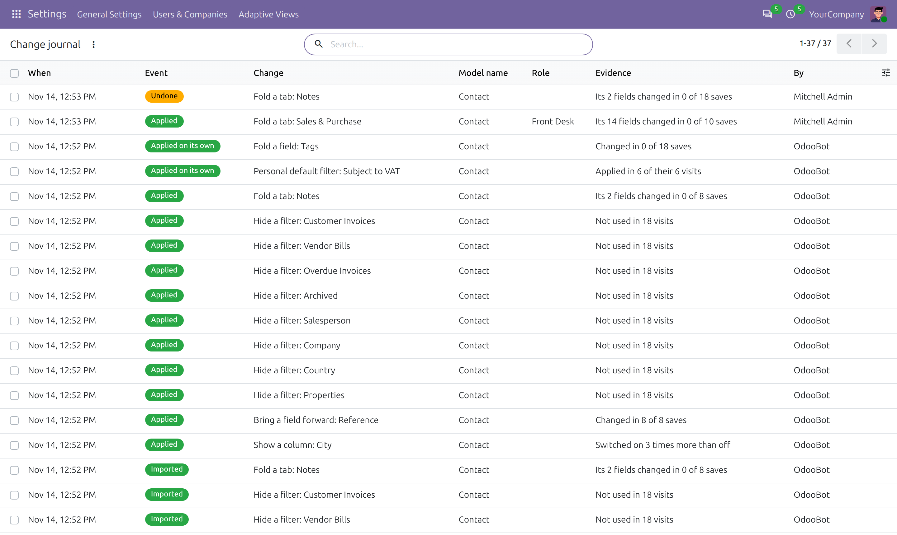
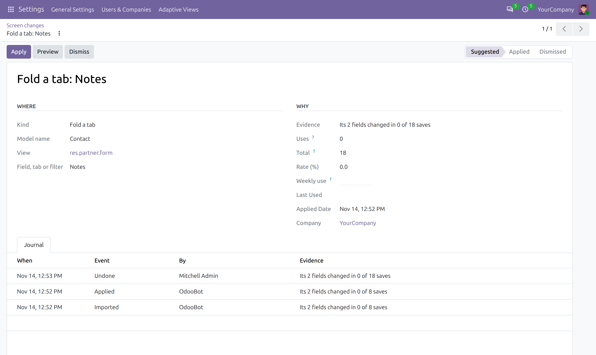

Screens and menus that adapt to how your company actually works.
Adaptive Views counts which fields get filled in, which filters get applied, which columns get switched on and which menus get opened - then folds the clutter away, makes the usual filter the default, shows the column everyone wants and puts the menus in the order they are used. One click to apply, one click to undo.

Learnt from use, applied per company, undone in one click. Your views themselves are never rewritten.
Fields nobody changes move behind a "Show 3 rarely used fields" link at the bottom of the form.
A notebook tab whose fields nobody touches folds away as one, and comes back with the same link.
A field on a back tab that is filled in almost every time moves up to the main part of the form.
The filter applied on most visits becomes the action's default, through Odoo's own default favorites.
Filters and group-bys nobody used in months leave the search menu, so the useful ones stand out.
Optional columns people keep switching on are shown by default; the ones they switch off are hidden.
Each suggestion says why: "Changed in 0 of 312 saves", "Applied in 91 of 120 visits", with the weekly use over the last three months. Apply, undo or dismiss - nothing changes on its own.

Every field of every form, with how often it was changed, why it is kept, and a Fold button - a clean-up list even if you never apply a suggestion.

Every menu with how often it was opened and when it was last used, to tidy the apps your team really works in.

Folded fields stay on the form, out of sight. One link shows them again; nothing about the record changes.
How many saves or visits before a suggestion, the shares that count as rare or usual, models and fields always left alone, and a reset.

Only the names of the fields, filters, columns and menus used are counted. What people type stays private.
Changes are applied while Odoo builds the screen, so module upgrades and other modules' views keep working.
Required, read-only and title fields, fields other fields depend on and legal documents are never touched.
Apply or undo, and every open browser picks the change up on its next screen.
All included - no paid add-on.
The apps, and the menus of each app, line up by how often they are opened. Each app still opens on the same screen, and menus you pin never move.
Pick the groups to learn apart - Sales, Accounting, Warehouse. Each role gets the changes learnt for it, on top of the changes for everyone.
The filter a person applies on most visits becomes their own default favorite, and their menus follow what they open - nobody else's.
Above stronger thresholds, clear changes apply without an admin. A weekly digest lists them, each with a link to undo.
Every change applied, undone, dismissed or imported, with who and the numbers behind it. Open a screen with a change before applying it.
Tune the screens on a test database, export the changes to one file and import them in production.
Customers is opened most, so it comes first under Sales > Orders.

The Front Desk never uses the Sales & Purchase tab, so it is folded for them only.
What changed on your screens, by whom, and what applied on its own.

The Preview button opens the screen with the change, without applying it.

Questions or ideas? odoomates@gmail.com